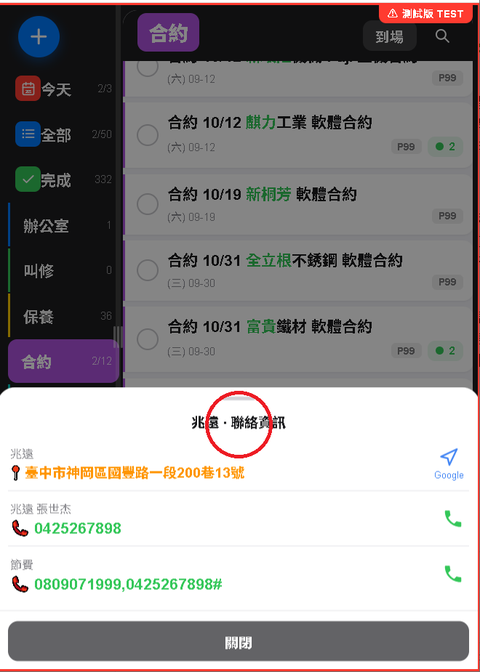
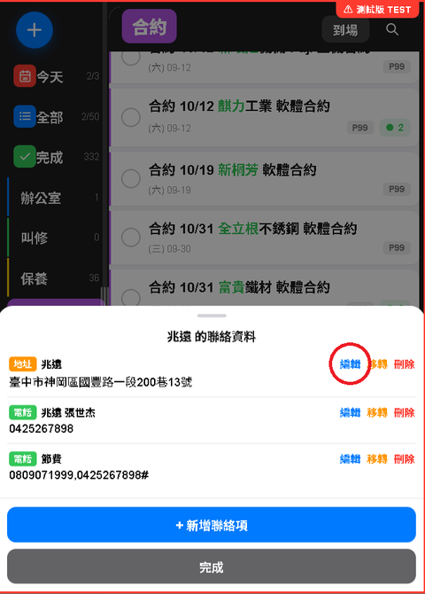
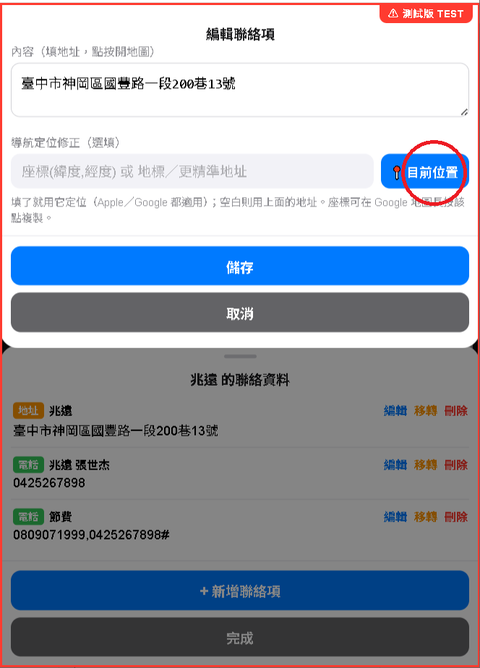

快速新增用 AI 解析，語音輸入更省事
一句話裡同時講好幾件事，AI 會自動拆成多筆任務、各自判斷分類跟日期，你不用先想好「這個要選哪個分類」再輸入。用手機的語音輸入直接講一大段、講完點 AI 解析，比自己打字快，而且客戶名稱如果因為口音或聽寫誤差被辨識成同音錯字（例如正確客戶是「協鉦」，語音辨識卻聽成「寫真」），AI 會對照你既有的客戶清單自動修正回正確的客戶名稱。這個功能跟保養路線的 AI 排序一樣，也需要先在設定頁輸入 Gemini API Key（每位使用者自己的，申請方式見第 4 段），沒設定的話按 AI 解析會直接跳錯誤訊息。
輸入框不限於自己打字或講話
客戶用 Email 或簡訊描述需求時，直接把整段內容複製貼上進快速新增的輸入框，不用自己重新消化、摘要成一句話——AI 一樣會從這段文字裡判斷出任務內容跟日期。
推論建議：如果原始內容裡沒有明確提到客戶名稱，貼上之後手動補一下客戶名稱再送出解析，準確率會更好。
同客戶任務聚合，省下的是「多跑一趟」
任務卡片上如果同一個客戶還有其他未完成的任務，會有徽章提醒。真正的價值不是「看到還有什麼任務」，是
趁著人已經要去這個客戶那邊，把原本排在別天的小任務一併拉來今天做掉——少跑一趟就是省一趟的時間跟油錢，尤其對外勤性質的工作特別有感。
抬頭的搜尋功能，實務上已經比較少用到
早期設計搜尋，是為了找特定客戶或任務名稱，但同客戶任務聚合功能上線後，這個需求大部分被取代掉了——想知道某個客戶還有什麼事，直接點任務卡片上的聚合徽章就看得到，不用特地跑去搜尋。搜尋還是有它的用途（例如要找的客戶當下畫面上完全沒出現、或要找的是很久以前的任務），只是日常使用的頻率已經比早期低很多。
長壓聯絡資訊直接跳編輯，資料隨時更新不用另外找
聯絡資料常常是在溝通過程中才發現需要補或改的——電話講到一半客戶說換了新電話、寄信才發現地址打錯、聯絡窗口換人了要加一筆新的聯絡人。不用先關掉手邊在看的畫面、跑去客戶管理裡重新搜尋這個客戶，直接在任務卡片點開聯絡資訊、長壓標題，就跳進編輯畫面，馬上補資料。

① 長壓「聯絡資訊」標題半秒

② 跳進可編輯列表，點想改的那一項旁邊「編輯」
最常見的具體情境是定位座標修正：客戶地址的定位有時候跟實際位置差很遠（例如巷弄複雜、地圖定位飄掉）。做法是：先憑經驗或問路找到客戶實際所在的位置，人到了之後，直接長壓聯絡資訊跳進編輯畫面，把目前位置存成這個客戶的定位座標——趁記憶最新鮮、人還在現場直接修正，比回辦公室再想起來要準得多。修正過一次之後，之後不管誰要去這個客戶，都會用你記錄的準確座標，不會再被帶錯路。

③ 編輯畫面裡點「目前位置」，儲存後定位就修正好了
「到場」按鈕記錄的時間會一直留著，做保養服務紀錄用得上
進到客戶辦公室的當下按一下「到場」，會記錄下當下的時間，而且這個時間會一直顯示在按鈕上，不會自動消失，一路持續到你手動清除為止。保養服務紀錄需要「到場時間」跟「完成時間」——按下去的當下就是到場時間，等保養做完要填紀錄時，時間還顯示在按鈕上，直接照抄就好。完成時間就用當下的時間，紀錄填完再手動清除，準備給下一個客戶用。長壓這顆按鈕還能叫出最近的到場記錄。
推論建議：兩個實際限制要知道：這個記錄只存在這台裝置本機，不會同步到雲端、也不會出現在其他裝置上；長壓查到的歷史只留最近 5 筆，超過會自動蓋掉最舊的。這個功能適合當「當下、單一裝置」的暫時記憶輔助，不適合當正式的到場記錄留存——重要的服務紀錄還是要正式填進任務備註或公司系統。
用備註欄位記錄溝通歷程
一件事如果要來回好幾次（報價傳真過去、對方回報價、電話確認細節……），每次溝通完，順手把日期跟內容記一筆進備註——不是系統自動整理，是你自己養成的記錄習慣，累積下來不管自己回頭查、還是換人接手，都能一眼看出談到哪裡、卡在哪個環節。
語音加備註讓這個習慣做起來更快：點開任務的檢視畫面，會看到一顆「🎤 語音加備註」按鈕，點下去跳出一個小輸入框，已經先幫你填好「M/D 」（今天的日期），接著點鍵盤上系統內建的麥克風圖示語音輸入、或直接打字，講完按確定——內容會接在既有備註的下面，新增一行「日期+這次內容」，不用切進完整編輯畫面、也不用自己手動打日期。
實際案例（示範怎麼把這個習慣用在一個拖比較久的任務上）：客戶「協鉦」的張小姐電話詢問電腦報價——手機快速新增，直接對著輸入框語音講出來，例如講成「寫真張小姐電腦報價」（語音辨識偶爾會把公司名聽錯，這裡剛好聽成「寫真」），AI 解析時會對照既有客戶清單，自動把公司名修正回正確的「協鉦」。回辦公室報價、傳真出去後，用語音加備註講一句「傳真後跟張小姐確認」；客戶把報價回傳確認，再加一筆「報價已回傳確認」；報價確認後安排採購，再加一筆「已請陳小姐採購」（公司內部負責會計兼採購的同事，不是客戶張小姐）；中間如果客戶還有要求調整規格、問交期，都可以隨時再補一筆。等到出貨，任務按完成——整個從詢問到出貨的過程，已經依時間順序完整留在備註裡。
單據、設備照片直接附在任務上
長按任務進編輯畫面，可以直接拍照或從相簿選圖片附加上去——報價單、對方回傳的文件截圖、現場設備照片，都跟著這筆任務放在一起，不用回頭在手機相簿或雲端硬碟裡找是哪一張。
優先值自動去重，不用自己記哪個號碼用過
同分類底下要排優先順序時，直接設想要的數字就好，就算跟別人撞號，系統會自動把原本占用的任務往後推、連鎖處理——不用先去翻清單確認「這個數字有沒有人在用」。
加油里程數先快速新增記一筆，週四打費用單時不用再回想
公司車加油時，發票上要記錄當下的里程數——加油當下直接快速新增一筆（例如「加油 里程 12345」），花不到十秒。重點是幫你把這個數字留到週四打費用單那天還找得到。跟「每週四費用單週期任務」正好搭配：週期任務提醒你今天該打費用單了，加油記錄提供打單當下需要的實際數字，兩個技巧合起來用，週四當天不用再東翻西找。
私人分類當隨手記的購買清單
要去大賣場買東西前，平常想到「快沒了、要買」的東西，隨手用私人分類快速新增一筆。等真的要去大賣場那天，切到私人分類，清單上列的就是要買的東西，直接照著買、買完打勾。這個技巧的價值是
分散記錄、集中使用：想到的當下跟真正要用清單的時候通常不是同一時間，中間這段落差常常就是忘記買東西的原因，先記下來就不會漏。
電腦版操作完，關閉前記得手動同步一次
正常的自動同步會在最後一個動作完成後
延遲十幾秒才觸發，如果動作做完立刻關掉分頁，很可能正好卡在這個等待的空檔裡，最後幾筆異動還沒真的送上雲端。手動按一次「立即同步」，確認真的同步完成再關，比較保險。
長壓側邊欄「全部」，看的是累積到那天為止的全部工作量
今天的事告一段落時，長壓側邊欄的「全部」分類，可以選一個日期（選單裡有「明天」的快捷選項）——但這裡篩出來的不是「只看那一天要做什麼」，是累積到選定日期為止、所有還沒完成的任務。這代表你看到的是「如果照原訂計畫，到那天為止我總共欠了多少事」，比單純看某一天的任務清單更適合拿來做工作量評估、事先規劃。
手機或程式異常、Google 帳號登入不了時，先做一次免登入救援匯出
如果遇到登入異常（帳號登不進去、程式卡住），登入畫面本身就有一個不用登入也能用的「📦 本地備份匯出」按鈕——直接把這台裝置目前快取的任務、客戶、聯絡資料、分類、週期範本、外部連結匯出成一個 JSON 檔案下載下來，連還沒同步上雲端的異動也會一併帶走。這個匯出只會讀取這些業務資料，不會碰到 Gemini Key、Google 授權這類帳號憑證，是安全的。
推論建議：要留意的限制：免登入狀態下沒辦法連線查詢雲端，匯出的每一項資料都是這台裝置上次同步時留下的本機快取，不是即時連線抓的最新狀態——這個限制適用於全部六項。如果這台裝置有一陣子沒同步過，救出來的內容就是「上次同步當下」的樣子。等登入恢復正常後，這個檔案可以拿來對照確認、或必要時用「還原備份」救回。